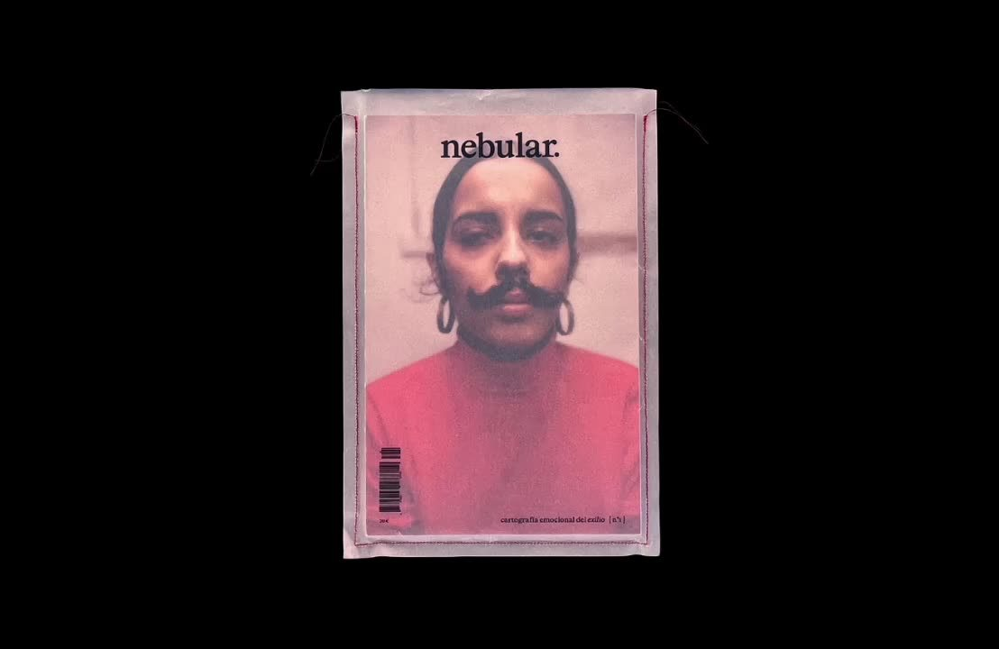
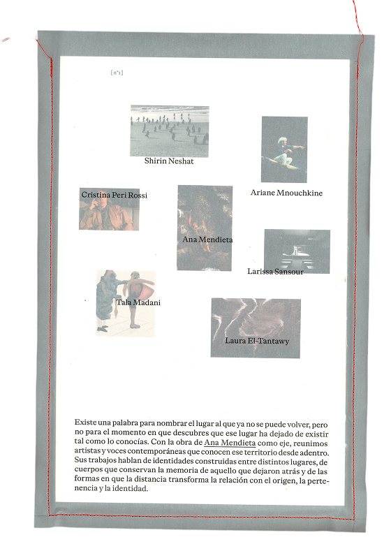
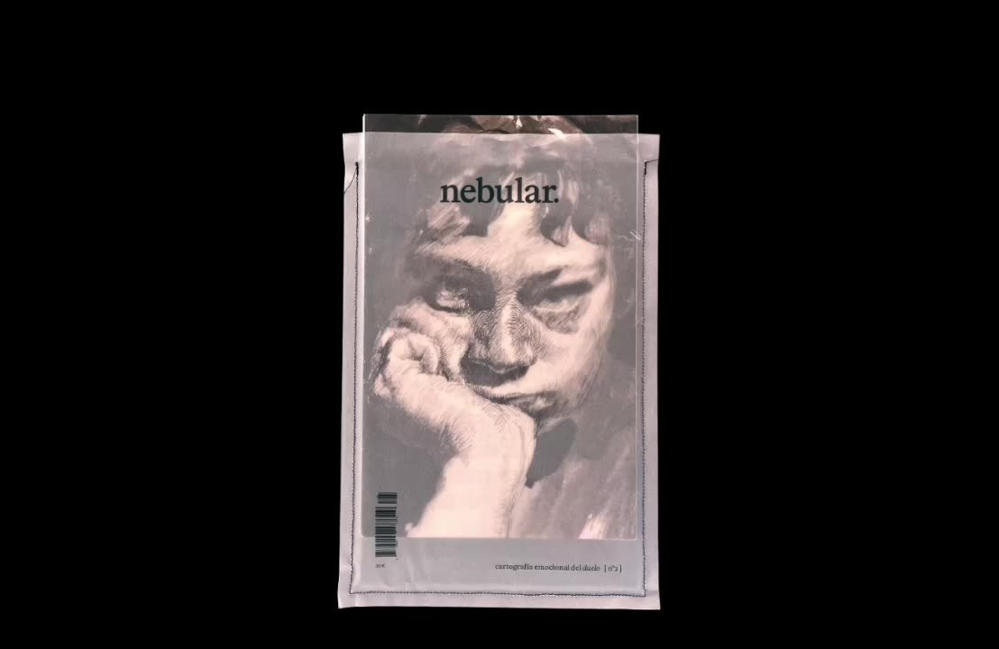
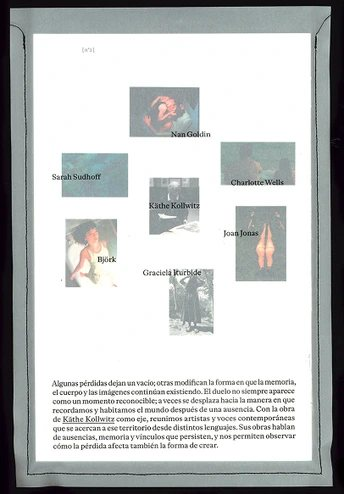
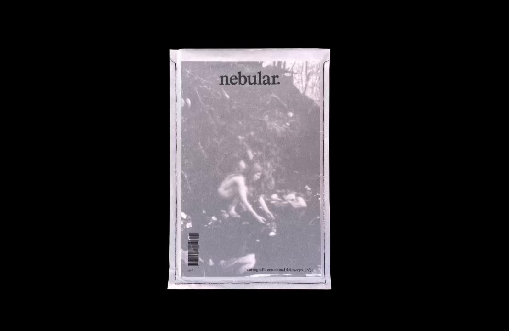
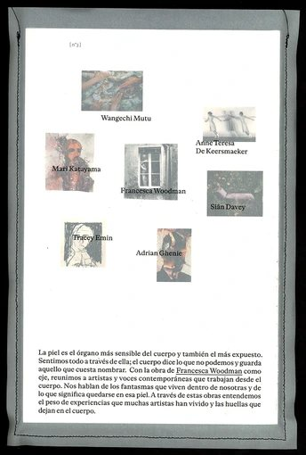
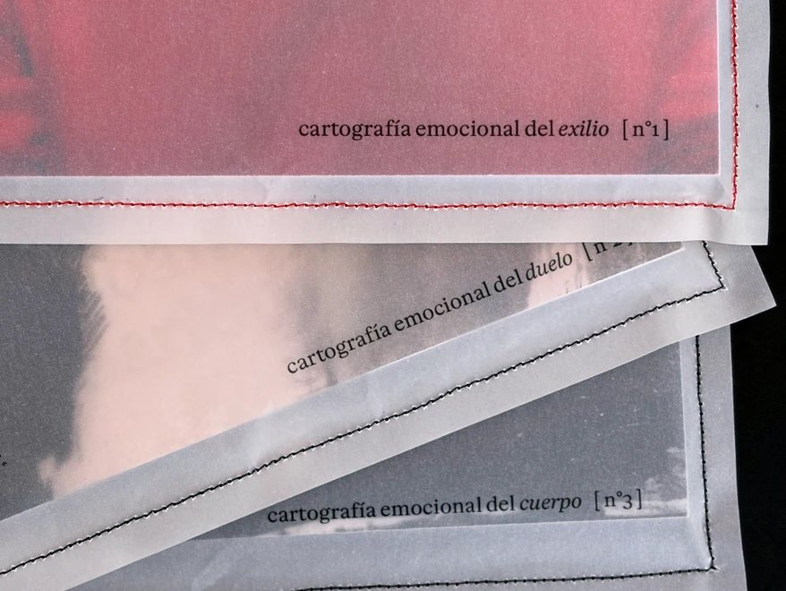

01 Intro
Emotional
Cartography
of Art
Master in Editorial Design · September 2025 – June 2026
Art magazine that reflects on why we create, what drives us, and how we translate emotions into visual language. In a context of visual saturation and the constant production of content, the magazine offers a slower perspective on what happens before the artwork itself: the experiences, emotions, and inner tensions that shape the creative process and are transformed into art through literature, the visual arts, cinema, and music.
Each issue is built around a shared tension connected to a deceased artist, whose legacy serves as the narrative core that links a range of contemporary artists.
Rather than focusing on the final outcome, we understand creation as a process of transformation and as a way of giving form to the invisible. The magazine explores how experiences such as grief, exile, and bodily trauma transcend time, connecting people through art.
02 Issue 1 — Exile
Ana Mendieta
Shirin Neshat
Cristina Peri Rossi
Ariane Mnouchkine
Tala Madani
Larissa Sansour
Laura El-Tantawy
Seven artists, seven ways to navigate exile.
Editorial
Ana Mendieta’s work begins with the Cuban soil she left behind as a child, and to which she returned decades later to press her body against it, as if physical contact could recover something that time and distance had dissolved. Her Siluetas are not metaphors; they are the literal record of that attempt.
The fact that the body disappears and only the trace remains expresses something words cannot fully capture about what it means to belong to a place that no longer belongs to you.


03 Issue 2 — Grief
Käthe Kollwitz
Nan Goldin
Sarah Sudhoff
Björk
Graciela Iturbide
Joan Jonas
Charlotte Wells
Seven artists, seven ways to navigate grief.
Editorial


04 Issue 3 — Body
Francesca Woodman
Wangechi Mutu
Mari Katayama
Tracey Emin
Adrian Ghenie
Siân Davey
Anne De Keersmaeker
Seven artists, seven ways to inhabit the body.
Editorial
Francesca Woodman's work speaks of the desire to disappear, of the ghosts that live within us, and of the walls that prevent us from escaping ourselves. It unsettles us because we have all inhabited that skin and know how difficult it can be to remain inside it.
Her work brings together artists who use their bodies to speak and to cry out through lived experience. Their practices expose abuse, reclaim space, and invite us into a territory that many of us have inhabited but perhaps never fully recognized.


05 The vellum sleeve

We designed a translucent vellum paper sleeve to separate the magazine from the artwork, as we felt that intervening directly on the piece would be too intrusive. This allows the image to remain clean once the sleeve is removed, giving the publication greater value as a collectible object.
At the same time, the sleeve reinforces the graphic concept by creating a sense of visual diffusion, echoing a nebula that gradually reveals the content underneath.
06 Typeface
Geist (Vercel) · Otto (Dinamo)
Type specimen
Otto (Dinamo) — titles
Geist (Vercel) — text
Emotional Cartography of Art
Art magazine that reflects on why we create, what drives us, and how we translate emotions into visual language.
Geist Light · 17 / 26
Otto · titles
Otto (Dinamo) is used under an educational licence, solely to present this student project.
ABCDEFGHIJKLMNÑOPQRSTUVWXYZ
abcdefghijklmnñopqrstuvwxyz 0123456789
ABCDEFGHIJKLMNÑOPQRSTUVWXYZ abcdefghijklmnñopqrstuvwxyz 0123456789 & ¿? ¡! —
07 Credits
- Editorial direction, art direction & design
- Antonia Ilic Bromberg, Manuela García Aristizábal
- Research & archives
- Antonia Ilic Bromberg, Manuela García Aristizábal
- Context
- Master's Degree in Editorial Design, Elisava, Barcelona School of Design and Engineering
- Typeface
- Geist (Vercel), Otto (Dinamo)
- Paper
- Arena Rough 90 g/m², vellum paper sleeves 90 g/m²
- Printing
- Tecnoart, Barcelona, 2026
- Acknowledgements
- Carol Monpart, Isabel Merino, Josep Román (Affaire), Laura Meseguer, Ane Guerra, María Dolores Soriano, Marc Panero